The long-awaited documentary on Tibet, The Potala Palace, is about to air. Before launch, producer Tiancheng Jiahua and Tencent Video invited experts to an early screening. On August 5 at the Cultural Palace of Nationalities in Beijing, officials, experts, media, viewers, and the team watched together and discussed the film.
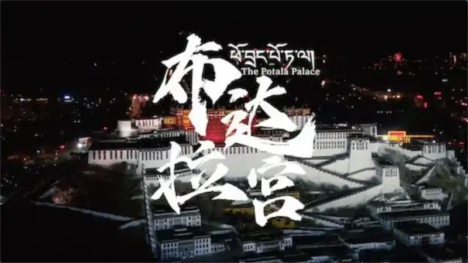
The Potala Palace is a great symbol of human and Chinese national culture. To show its exquisite form and thousand-year legend in high-definition, and to tell the story of the Chinese nation well, was the starting point of the documentary.
The documentary was made by Tiancheng Jiahua and Tencent Video, which began its exclusive online run at 18:00 on August 6. It is part of the National Ethnic Affairs Commission’s 100-part series A Journey of National Culture. A Han and Tibetan team made it over more than three years. Across history, architecture, relics, art, folk life, nature and conservation, and modern life, it records this treasure built by the labor and taste of generations. Across seven episodes, with actor Hu Ge narrating in Mandarin, it tells how national culture was created, passed on, and kept. It is the first documentary to show the palace in full.
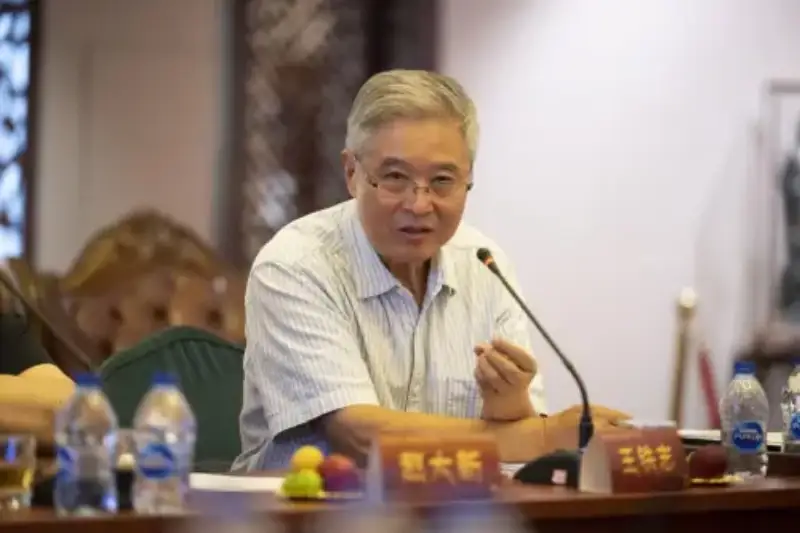
Wang Tiezhi, chief editor of The Potala Palace, editor-in-chief of the Chinese National Cultural Resources Database, former deputy director of the Policy Research Office of the National Ethnic Affairs Commission, and former editor-in-chief of the Nationalities Publishing House
Luo Liming, chief planner and deputy director of the Ethnic and Religious Affairs Committee of the CPPCC and former deputy director of the National Ethnic Affairs Commission; Zhang Shuang, co-producer and chair of Tiancheng Jiahua; Wang Tiezhi, chief editor; Li Decheng, chief editor and deputy secretary-general of the China Tibetology Research Center; Zhao Daxin, planner and former party secretary and vice chair of the China Record Corporation; Zhang Zhaowei, post-production director; Zhao Jie, chair of the China Documentary Association; Wang Jiapeng, research fellow at the Palace Museum; and Qieji Zhuoma, associate professor at Minzu University. They watched the film and spoke.
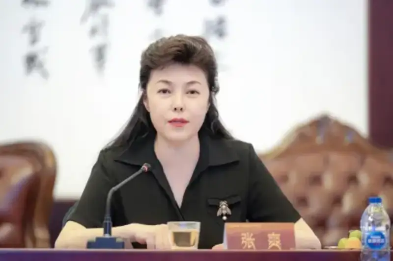
Zhang Shuang, chair of Tiancheng Jiahua, co-producer and chief producer
Zhang Shuang, chair of Tiancheng Jiahua, co-producer and chief producer, spoke for the producers: To make this documentary, we thank the United Front Work Department, the National Ethnic Affairs Commission, the National Radio and Television Administration, the National Cultural Heritage Administration, and the party committee and government of Xizang, its publicity and united-front departments, cultural heritage bureau, and the Potala Palace office. Their leaders supported the shoot, approved the outline and sample, and asked the Xizang departments to help. The Panchen Lama heard reports and watched the sample twice and praised its meaning. With this support, the film was the first ultra-high-definition full view, shot as fully as possible.
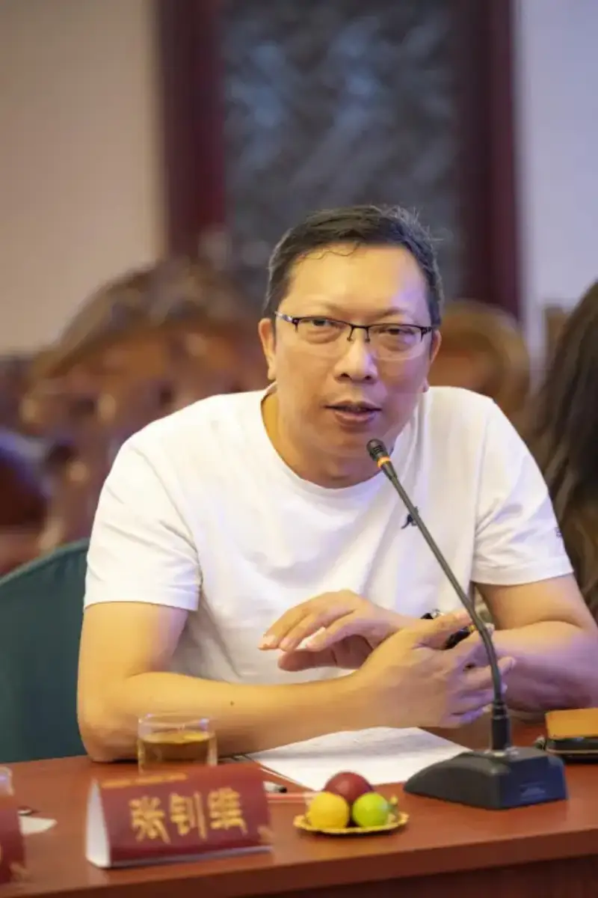
Post-production director Zhang Zhao of The Potala Palace
Post-production director Zhang Zhaowei described how he shaped the episodes. He tied the clips together with a cultural idea. He said: The Potala Palace on Red Hill is a grand, beautiful cultural symbol our forebears carved on the roof of the world. This mark will also be carved in the hearts of generation after generation.
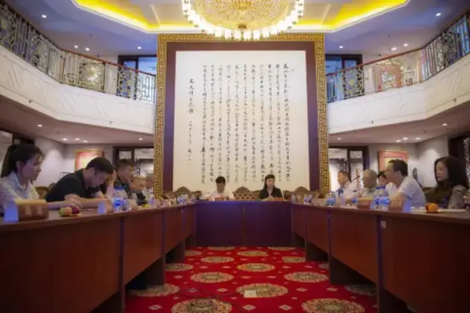
At the preview
Professor Zhang Bai, former deputy director of the National Cultural Heritage Administration, previewed the film. He was away but sent his thoughts. He recalled the first large repair of the Potala Palace in the 1990s, when he led experts on site surveys. He said: Develop through preservation, and preserve through development. That is the direction and basic way ahead for the future of the Potala Palace.
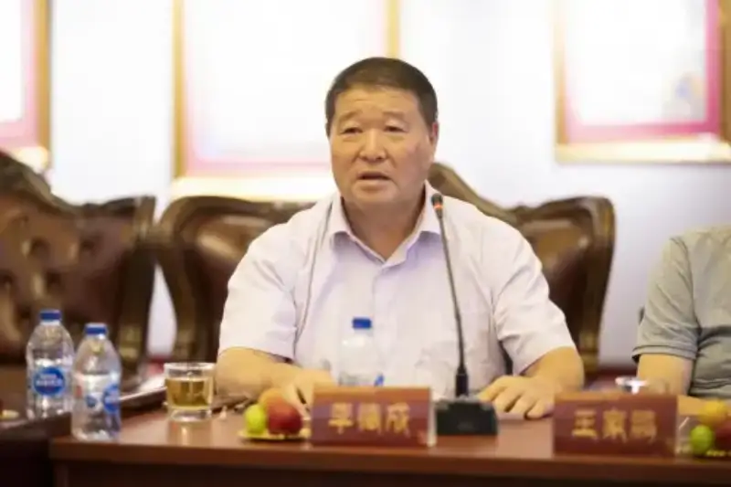
Li Decheng, deputy secretary-general of the China Tibetology Research Center and chief editor
Li Decheng spoke on the film’s thought, art, innovation, and sense of the times. He called it a grand, sweeping documentary that carries culture and supports national unity and the sense of a shared Chinese nation.
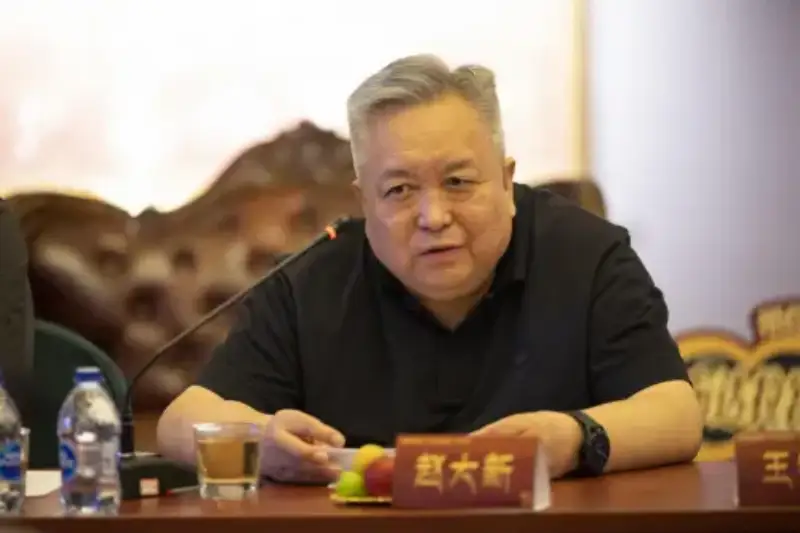
Zhao Daxin, former party secretary and vice chair of the China Record Corporation, chief planner of the National Cultural Resources Database, and planner
Zhao Daxin said: The film pairs a grand subject with plain storytelling. With a unique eye and tender feeling, it guides viewers through the beauty of the Potala Palace while they learn the changes of Xizang history and the roots of its civilization. At key points of Xizang history, it stresses the shared and blended nature of national culture, and the whole film shows a diverse yet unified Chinese nation.
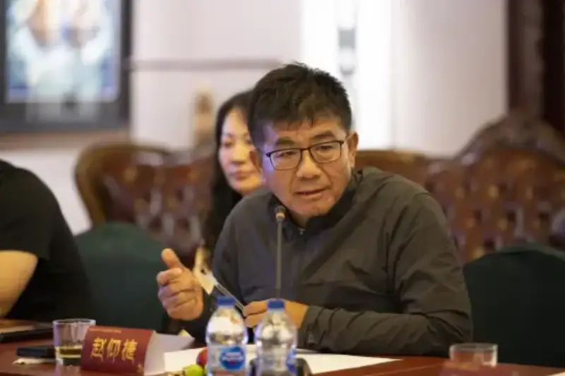
Zhao Jie, chair of the China Documentary Association
Zhao Jie said: The film is truly beautiful, striking, and unique. It uses a cinematic documentary to tell us the past and present of the Potala Palace, and how we now pass it on. By telling stories of Tibetan life, it shows the civilization of Tibet today. This is the new Xizang, a prosperous and civilized new Xizang.
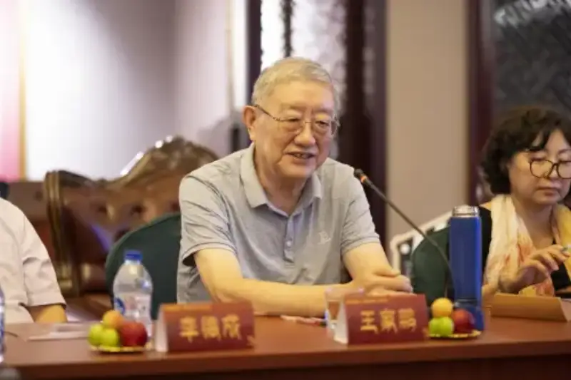
Wang Jiapeng, research fellow at the Palace Museum and member of the national expert committee on intangible cultural heritage
Wang Jiapeng said: I study relics and the history and culture of Xizang. I thought the documentary would just introduce relics. After watching, I was struck. It opened my view with a fresh angle and brings the Potala Palace to life. It shows not only buildings and relics, but also people.
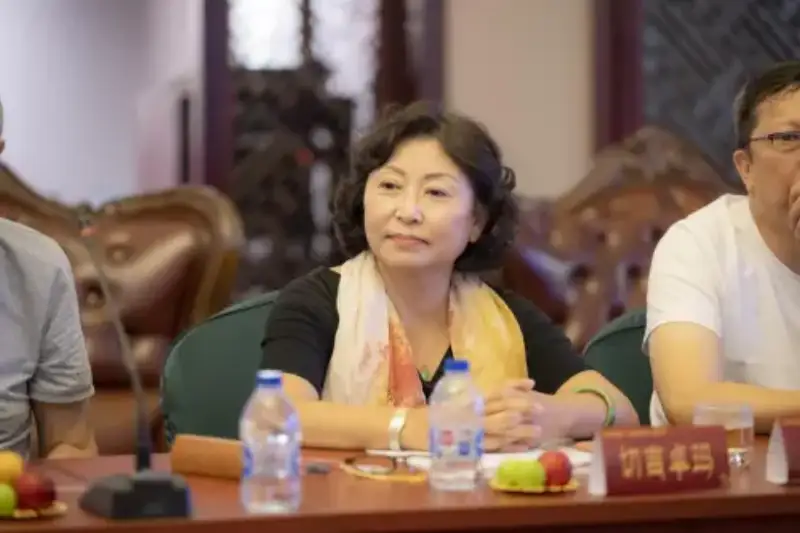
Qieji Zhuoma (Tibetan), associate professor at Minzu University
Qieji Zhuoma said: In the hearts of Tibetan people, the Potala Palace is not only a building. It has risen into a symbol, a faith, a milestone, a monument. The core value of the film is the exchange between people and nature, and between people, about faith, love, and respect. In a time when the environment worsens and wars break out, the team’s care for nature and its search for the value and meaning of life, held with reverence, is worth learning.
Luo Liming described the support of central departments and leaders. He noted that he led the team to report to and consult the Panchen Lama twice. The Panchen Lama watched the sample carefully and said the documentary was well made, and important for telling China’s story and Xizang’s story well, opposing division, and keeping world peace.
Luo stressed how to read the film within the idea of a shared Chinese nation. He felt the team handled its principles well: it joins grand narrative with human stories; while showing the long history of Xizang, it shows the bond with the motherland; while showing the richness of Tibetan culture, it shows the blend of all national cultures; and while passing on traditional craft, it uses modern technology.
He felt the documentary is deeply important for the blend of Xizang and inland culture and a shared Chinese spiritual home, for exchange among all peoples, for the outward exchange of Chinese culture, and for the sense of a shared Chinese nation.
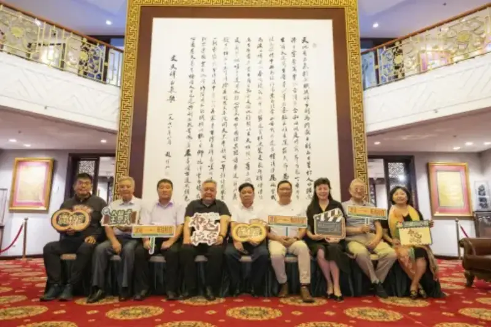
Group photo